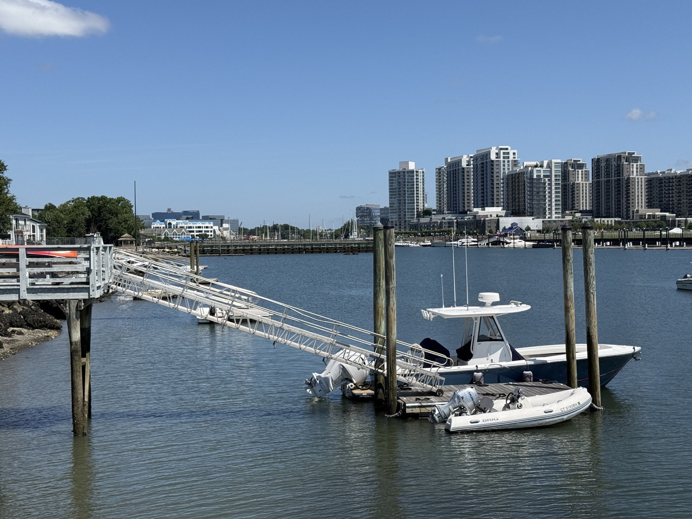
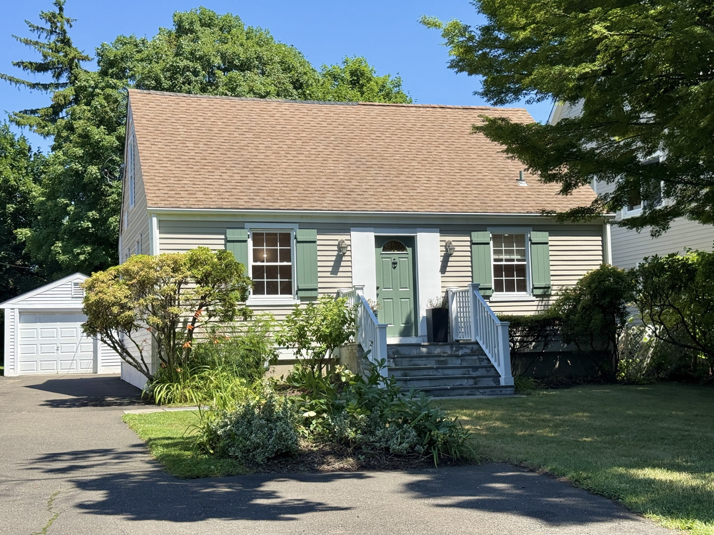

Every town does the Fourth of July. Not every town does it on the water. In Stamford the fireworks go up over Long Island Sound, the shoreline fills with families and beach chairs, and for one night the entire city feels like it's outside together. It's one of those evenings that quietly sells people on the place.
Where to watch the fireworks
The City of Stamford's Independence Day show is launched over the water near Cummings Park / West Beach, and the crowd spreads out along the shoreline and the nearby parks. People also catch it from around the harbor and the Cove. The one universal piece of advice: get there early. The good waterfront spots go quickly, parking is tight, and half the fun is the hour beforehand — blankets down, the sun going, the boats settling in offshore. Dates and rain dates shift year to year, so check the city's schedule before you head out; you can also see what else is happening that week on the What's On in Stamford map.
A city on the Sound
The fireworks aren't a one-off — they're a headline for a whole season. Stamford is a small city that happens to sit right on the water, and in summer that's the whole personality: a working harbor, marinas full of boats, the Harbor Point boardwalk, and beaches at Cove Island and Cummings Park a few minutes from downtown.

This is the part that surprises people moving up from the city or over from Westchester: you can live a short walk from the train and still spend your Saturday on a boat, on a beach, or with a drink on the water. It's the everyday version of what the fireworks night makes obvious — Stamford's real amenity is the Sound. More on that in the living in Stamford guide.
The rest of the Stamford summer
Around the fireworks, the calendar fills in: Alive@Five and outdoor concerts, the Summer in the Park series at Mill River, farmers markets downtown and at the Nature Center, food festivals, and a Bedford Street dining scene that moves onto the sidewalks. It's a lot of city for a short season, which is exactly why people pack it in.
Where the "I could live here" part comes in
I'm a real estate agent, so I'll be honest about my angle: nights like the Fourth are when people stop thinking of Stamford as a commute and start thinking of it as home. And when they do, the range here is the pleasant surprise — from downtown and Harbor Point condos steps off the water to classic New England homes on the tree-lined streets a little inland.

That's the whole pitch, really — a city that gives you the waterfront and the fireworks and a front porch, depending on which neighborhood you pick. If a Stamford summer has you wondering what it'd cost to make it permanent, that's a conversation I'm always happy to have — no pressure, just a straight read on neighborhoods, prices, and what's out there.